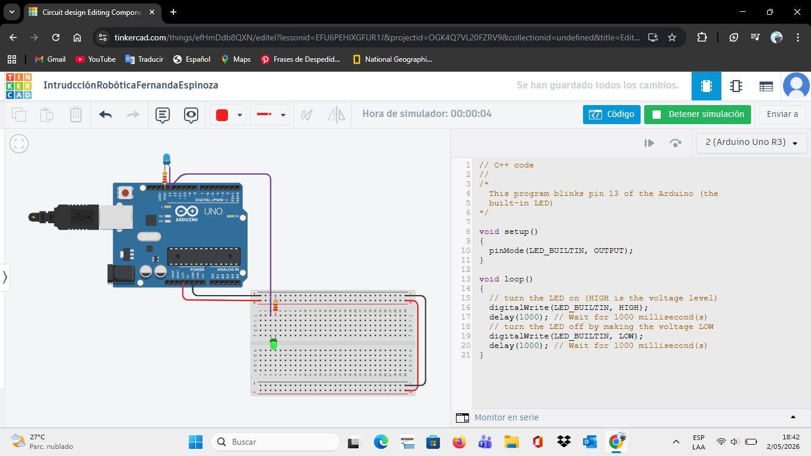

Contenido de la página web
Semana 1: Introducción a Arduino
En esta semana aprendemos lo esencial sobre Arduino, la plataforma de hardware libre que permite crear microordenadores personalizados para cualquier proyecto creativo.
Semana 2: Primer circuito
En esta semana se aprendieron las habilidades básicas para hacer una led funcionar con el uso de Arduino y componentes de electrónica.

Semana 3: Circuito LED y RGB
Durante esta semana utilizamos la plataforma virtual Tinkercad para diseñar y simular circuitos electrónicos de forma segura. Aprendimos a conectar y programar un LED estándar y un LED RGB.
Semana 5: Circuito LED y RGB
Durante esta semana utilizamos la plataforma virtual Tinkercad para diseñar y simular circuitos electrónicos de forma segura. Aprendimos a conectar y programar un LED estándar y un LED RGB.
Semana 6: Sensor de distancia ultrasónico
Durante esta semana utilizamos la plataforma virtual Tinkercad para diseñar y simular circuitos electrónicos de forma segura. Aprendimos a conectar y programar un LED estándar y un LED RGB.